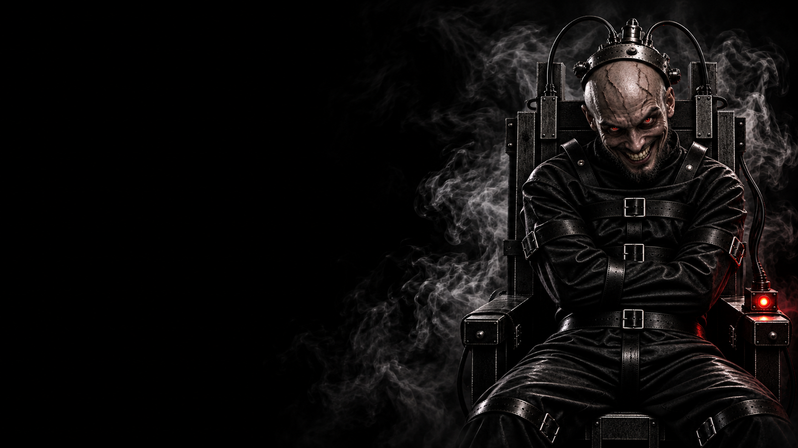

САМ ЗА СЕБЯ · УБИЙЦА
ПСИХ
БЕЗУМИЕ НЕ ИГРАЕТ
ПО ЧУЖИМ ПРАВИЛАМ.
Сам за себя
Одиночная · Убийца
Безумие — каждую ночь выбирает одного игрока, избивает его до смерти и выводит из игры. Не определяется проверкой Копа как опасная роль.
Псих не принадлежит ни одной из команд и играет исключительно за себя. Каждую ночь он выбирает одного игрока и выводит его из игры. Его главная задача — полностью избавиться от Мафии и приблизиться к собственной победе.
Коп не может вычислить Психа. Для победы вся Мафия должна покинуть игру. Псих побеждает, когда остаётся один против трёх мирных игроков, а представителей Мафии за столом больше нет.
Не спеши уничтожать Мафию чужими руками. Пока она в игре, она отвлекает внимание от тебя. Устраняй тех, кто мешает твоему плану, оставайся незаметным и подводи стол к нужному тебе финалу.